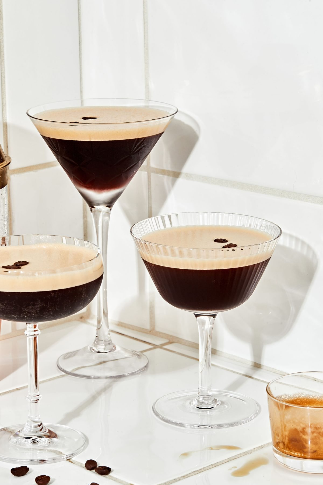
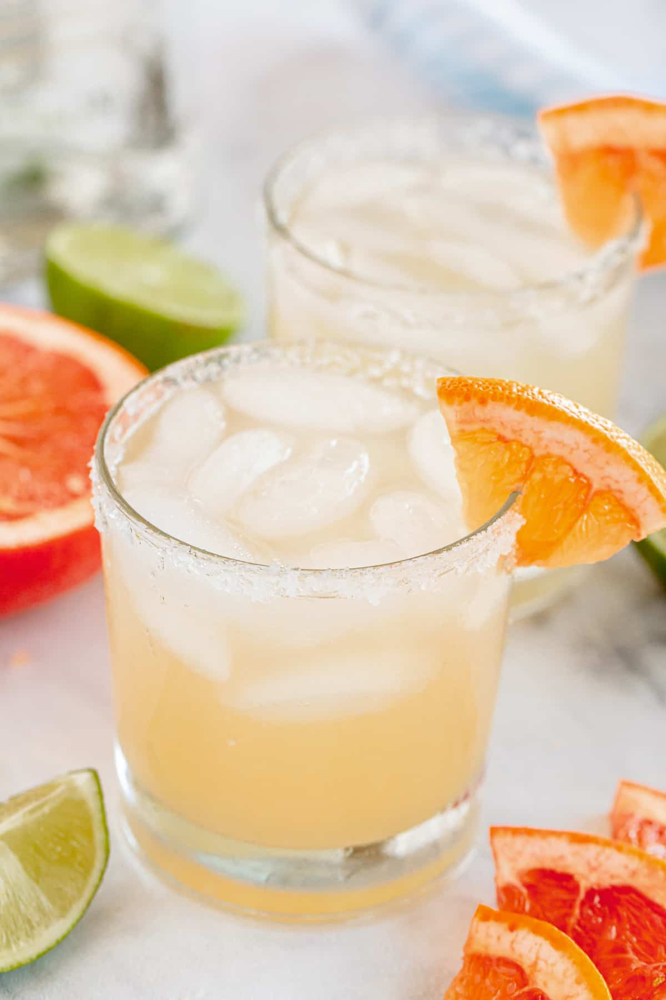
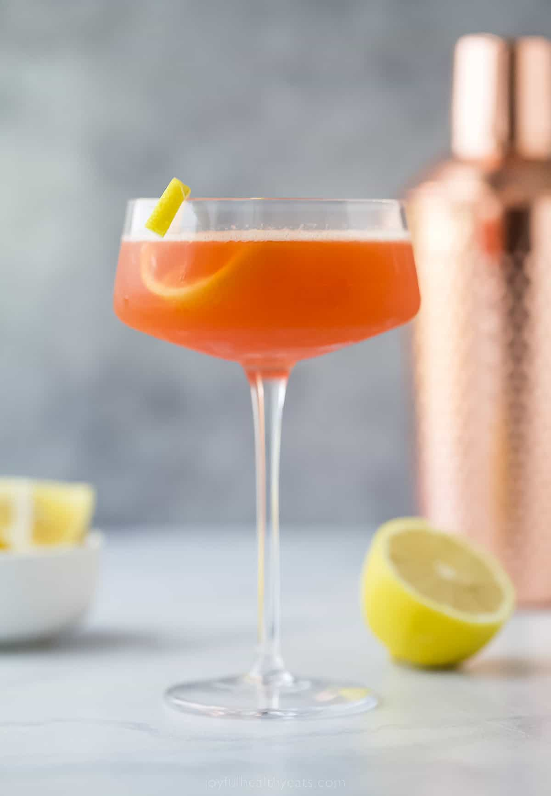
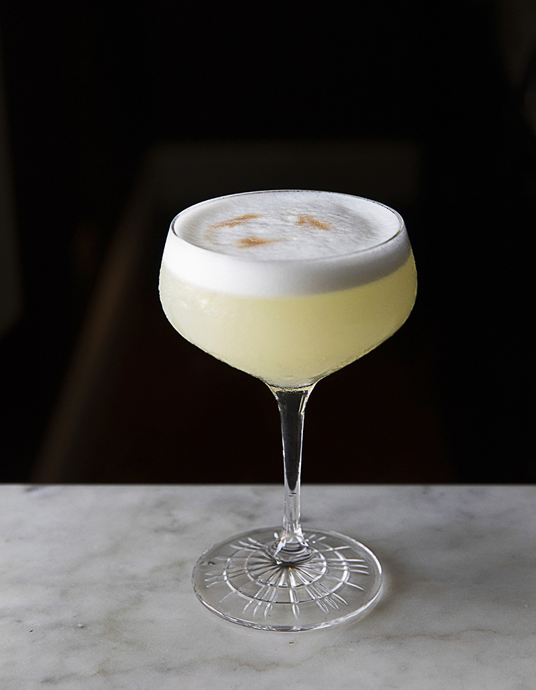
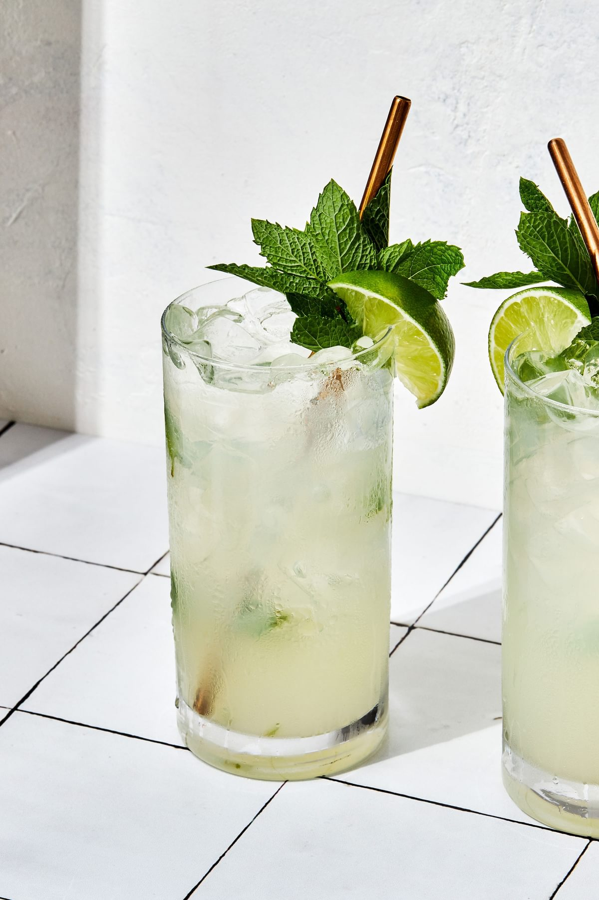
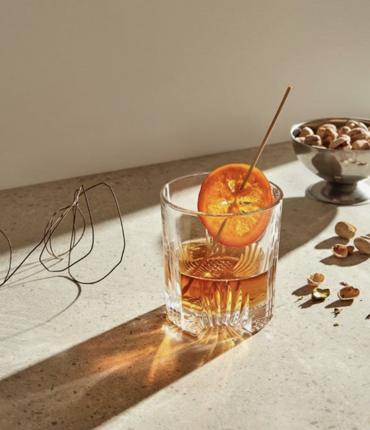

ESPRESSO MARTINI
THE PERFECT AFTER-DINNING COCKTAIL FOR ALL OCCASIONS

Ingredients
- Ice Cubes
- 1½ Parts Absolut Vodka
- ¾ Part Kahlúa
- 3 Whole Coffee Beans
- ¾ Part Espresso
How to make
- Fill a cocktail shaker with ice cubes. Add 1⅓ Parts Vodka, ⅔ Part Kahlúa, and ⅔ Part Espresso. Shake well to get the foam on top, and strain it into a cocktail or martini glass. Garnish by placing three coffee beans on top.
PALOMA
PERFEKT FUN DRINK WHEN FOR HAPPY HOUR

Ingredients
- Ice cubes
- 2 ounces tequilaIngredient
- 2 ounces grapefruit juice + wedges for garnish
- ½ ounce lime juice
- ¼ ounce agave nectar or to taste Coarse sea salt for the rim of the glasses
How to make
- Mix the tequila, grapefruit juice, sparkling water, lime juice, and agave nectar into the glass. Fill the remainder of the glass with ice. Adjust sweetness to taste. Garnish with grapefruit wedge.
PAPER PLANE
BITTERSWEET DRINK WITH BOURBON CHARACTER

Ingredients
- 3/4 ounce bourbon
- 3/4 ounce Aperol
- 3/4 ounce Amaro Nonino Quintessentia
- 3/4 ounce lemon juice, freshly squeezed
- Lemon
How to make
- Add the bourbon, Aperol, Amaro Nonino and lemon juice into a shaker with ice and shake until well-chilled. Strain into a coupe glass. Garnish with lemon wedge.
FIG THYME
FESTIVE AND BRIGHT DRINK PERFECT DRINK FOR YOUR NEXT GET TOGHETER

Ingredients
- ¼ cup granulated sugar
- ¼ cup water
- 1 shot gin
- 2 sprigs fresh thyme
- 4 - 8 figs, chopped
- tonic water
- ice cubes
How to make
- Heat sugar and water on medium heat. Add in thyme and steep in sugar syrup for 10 minutes. Once cooled, sugar syrup to a glass with ice. Add gin and chopped figs. Top with tonic water and a sprig of thyme
PISCO SOUR
FROTHY AND TANGY, WITH A SLIGHTLY SWEET AND SOUR TASTE

Ingredients
- 3 ounces pisco
- 1 ounce fresh-squeezed lime juice
- 3/4 ounce simple syrup
- 1 fresh egg white
- 1 dash Angostura or Amargo bitters
How to make
- Combine pisco, lime, simple syrup, and egg white in a cocktail shaker without ice and seal. Shake vigorously until egg white is foamy. Add ice to shaker and shake again very hard. Strain into chilled cocktail glass; dash bitters atop the egg-white foam.
MOJITO
CLASSIC COCKTAIL FOR HOT SUMMERDAYS

Ingredients
- 3 mint leaves
- 1/2 ounce simple syrup
- 2 ounces white rum
- 3/4 ounce lime juice, freshly squeezed
- Club soda, to top
- Garnish: mint sprig - lime wheel
How to make
- Lightly muddle the mint with the simple syrup in a shaker.Add the rum, lime juice and ice, and give it a brief shake, then strain into a highball glass over fresh ice. Top with the club soda. Garnish with a mint sprig and lime wheel
GRAPEFRUIT GIMLET
SWEET AND SOUR COCKTAIL PERFECT FOR EVERY SPECIAL OCCASIONS

Ingredients
- 2 ounces grapefruit juice
- 2 ounces gin
- 1 tablespoon simple syrup
- ½ teaspoon lime
- Lime to garnish
How to make
- Add the grapefruit juice, gin, and simple syrup to a cocktail shaker filled with ice. Cover and vigorously shake for 30 seconds. Strain into a cocktail glass filled with ice. Garnish with a thin triangle wedge of grapefruit or a lime wheel.
SPICY NEGRONI
SMOKEY FLAVOURED COCKTAIL PERFECT FOR AFTER-DINNING

Ingredients
- 1 ounce mezcal
- 3/4 ounce Campari
- 3/4 ounce sweet vermouth
- 1/4 ounce Ancho Reyes red chile liqueur
- 2 drops Bittermens Hellfire Habanero Shrub bitters
How to make
- Add the mezcal, Campari, sweet vermouth, chile liqueur and bitters to a mixing glass with ice and stir until well-chilled. Strain into an Old Fashioned or rocks glass over fresh ice.